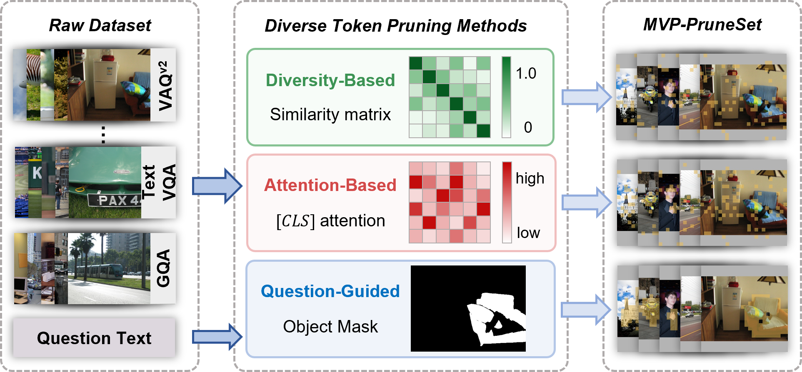
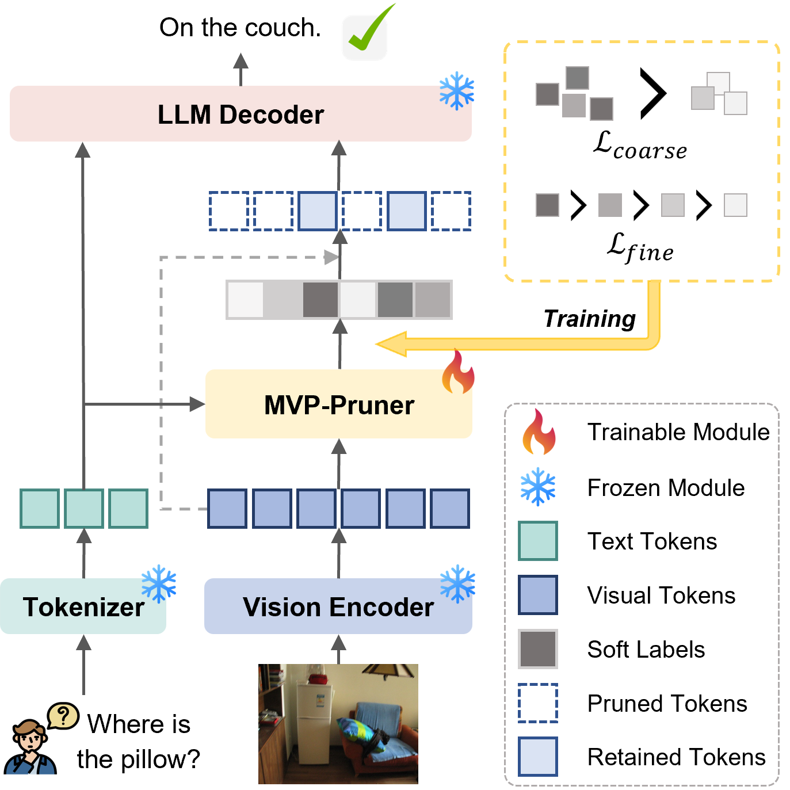

Accepted at EMNLP
One pruner.
Multiple views.
MVP: Multi-View-Guided Token Pruning for Vision-Language Models
Learn which visual tokens matter by combining question-guided, attention-based, and diversity-based evidence—then keep only the most useful tokens before they reach the language model.
MULTI-VIEW EVIDENCE
Question
Attention
Diversity
MVP-PrunerTop-K selection
with only 64 tokens
on Qwen2.5-VL-7B
at 20% retention
benchmarks
01 Motivation
Token necessity is
multi-faceted.
Vision-language models process hundreds or thousands of visual tokens per image. Existing pruning methods usually rely on a single criterion, capturing only part of what makes a token necessary.
MVP-Token treats heterogeneous pruning outcomes as structured supervision. It first builds MVP-PruneSet from complementary pruning families, turns their success–failure patterns into soft token-importance labels, and trains a lightweight, question-aware MVP-Pruner. The resulting scorer balances query relevance, local discriminative evidence, and global spatial coverage in a single pass.
+6.9
percentage points
Complementary methods solve different samples.
At a 64-token budget on 12,578 GQA samples, the union of SparseVLM, VisPruner, and SCOPE reaches 65.3% accuracy—well above the strongest individual method at 58.4%.
02 Method
Learn from disagreement.
Prune with confidence.
Collect multiple views
GRASP grounds the question into object masks; VisPruner contributes attention cues; SCOPE preserves diverse spatial and semantic coverage.
Fuse success & failure
SFF-Label reliability-weights successful and failed masks, producing continuous importance targets that preserve cross-view evidence.
yi = Pi[1 − Qi(1 − Pi)]
Rank and retain
A compact dual-attention scorer learns both coarse and fine-grained token orderings, then forwards only the top-K visual tokens to the frozen language model.


03 Results
Aggressive pruning.
Minimal compromise.
Evaluated across two VLM families and eight complementary benchmarks.
Fixed resolution
576 tokens
LLaVA-1.5-7B
Normalized average performance retained across eight benchmarks.
64 tokens remove 89% of the original visual sequence.
Dynamic resolution
20–30%
Qwen2.5-VL-7B
Normalized average performance against the uncompressed model.
Method30%20%
VisPruner94.15%88.39%
MVP-Token95.88%91.74%
The advantage widens to +3.35 points at 20% retention.
Single NVIDIA RTX PRO 6000
Less waiting.
Less waiting.
Same visual reasoning.
With roughly 174 visual tokens per sample, MVP-Token uses a lightweight learned scorer and one top-K operation, avoiding iterative selection overhead.
Latency89.22 msvs. 118.41 ms vanilla
Speedup1.33×vs. 1.21× VisPruner
Avg. tokens173.85from 867.59 vanilla
All reported values are transcribed from the supplied paper. See the paper for complete benchmark definitions, baseline settings, and per-task results.
04 Resources
Explore MVP-Token.
The repository includes training, supervision-building, and lmms-eval integration code.